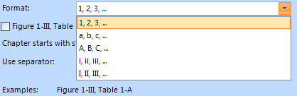

Captions for tables and Figures
In Telerik's RadRichTextEditor you can easily insert images, tables, etc. Now it is possible to label these by inserting
captions. This will help you define an image or a table and then refer to it later.
Insert Caption
You can open the Caption window by clicking on the Caption button.

If the caret is inside a table, the dialog would look like this: Caption Preview
Caption Preview
On the top there is a preview of the caption text that would be inserted. In this case we haven’t inserted any other captions with label
"Table" so the number that follows is 1. That number represents the number of captions inserted before that one with the same label.Options
You can select different options. The first one is Label. From here you can select the label text. By default you have
two options – Figure and Table.

You can also specify the Position of the caption - Above selected item or Below
selected item
We will have this option only if the caret is in a table or on an image. Otherwise it will be disabled.Creating and deleting labels
You can add new labels by using the New Label… dialog and of course delete old ones with the Delete Label button.

You cannot delete the two default labels - Figure and Table
When Exclude label from caption checkbox is checked the label text will be removed and only the number will be left.
Format
You can control how the numbering is displayed by using the Format ComboBox. You can see the available formats in the
picture below. By default the (“1, 2, 3, …”) format is selected.
Include chapter number
When the Include chapter number checkbox is checked, every time you insert a Caption in a new
section, the numbering is restarted. That’s why the preview now looks like this:

The first number shows the bullet of the section you are currently in, and the second number shows the number of Captions
being inserted in this section.
A section is defined by the Heading styles, but only when they are in a list. You can choose which
Heading style the chapter starts from and what separator to use. There are several available separators
– hyphen, period, colon.
 Insert
Insert
Clicking on the OK button will insert the Caption. It would look like this:

Here the Below selected item position is chosen, : for separator and A,
B, C… for formatting.
Inserting a Caption using RadRichTextEditor's API
Using Telerik's rich text editor's API is pretty straight forward. There is a method called InsertCaption() on
RadRichTextEditor which you can use to insert a new Caption into the document with a custom
label.
The CaptionDefinition class contains viable information for the creation of the caption like
Label, NumberingFormat and SeparatorType. The "caption"
parameter is of type string and represents the text in the caption that will be inserted after the number (also known as caption text). The
"includeLabel" parameter is of type Boolean and if true will include the label text to the caption. The "insertBelow" parameter is of type Boolean
as well and if true will insert the caption below the table or figure. So, in order to insert a caption using this method you would do something like:
__[C#] __
CaptionDefinition captionDefinition = new CaptionDefinition();
captionDefinition.Label = "testLabel";
captionDefinition.NumberingFormat = NumberingFormat.Arabic;
captionDefinition.SeparatorType = CaptionSeparatorType.Colon;
this.radRichTextEditor1.InsertCaption(captionDefinition, "captionText", true, true);
__[VB.NET] __
Dim captionDefinition As New CaptionDefinition()
captionDefinition.Label = "testLabel"
captionDefinition.NumberingFormat = NumberingFormat.Arabic
captionDefinition.SeparatorType = CaptionSeparatorType.Colon
Me.radRichTextEditor1.InsertCaption(captionDefinition, "captionText", True, True)
'#End Region
'#Region "insert2"
Me.radRichTextEditor1.InsertCaption(Me.radRichTextEditor1.Document.CaptionDefinitions("Table"), "captionText", True, True)
'#End Region
End Sub
End Class
The RadDocument contains the two default CaptionDefinitions by default. They reside in a collection called
"CaptionDefinitions" which is of type Dictionary
__[C#] __
this.radRichTextEditor1.InsertCaption(this.radRichTextEditor1.Document.CaptionDefinitions["Table"], "captionText", true, true);
__[VB.NET] __
Me.radRichTextEditor1.InsertCaption(Me.radRichTextEditor1.Document.CaptionDefinitions("Table"), "captionText", True, True)
'#End Region
End Sub
End Class
This code will insert a default caption with label Table.